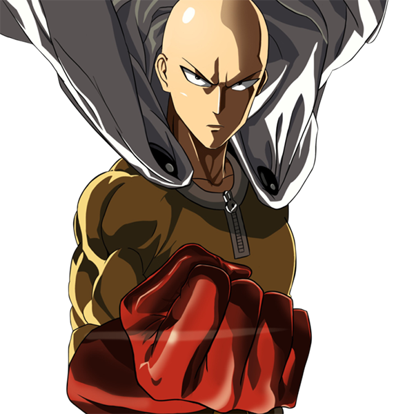

Saitama, (AKA Caped Baldy), is the titular ultimate main protagonist of the webcomic series/Manga/anime One Punch-Man, and the most powerful being ever alive in existence. Having apparently trained himself so hard that he unintentionally broke the natural limiter that prevents living beings from going beyond superhuman condition, Saitama faces an existential crisis as he is now too powerful to gain any thrill from his heroics.He is registered with the Heroes Association as a B-Class Superhero (A-Class in the webcomic) and is tasked to defend Z-City against Mysterious Beings.
If the heroes run and hide, who will stay and fight?
Despite the small membership, the group is immensely powerful and has the capability of taking on extremely powerful Dragon-level threats, even without Saitama. Certain individuals within the group are able to take on Demon-level threats alone and come out victorious, showing greater prowess than the capabilities of even groups of heroes.